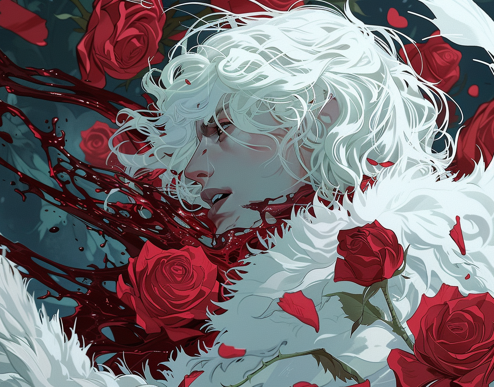

Zeph, the ArtistThe lands of Dark Zenith were a fertile ground for all kinds of creatures. Darkness and desolation could boil in every corner, giving rise to thieves, warriors, assassins, and monsters alike. Zeph was born into that relentless world, not of noble lineage, but as a mere human with an uncommon gentleness that set him apart from others. He grew up in a small village on the outskirts of Ebon Crown, surrounded by sharp palisades that tried to protect its inhabitants from the horrors that lurked outside. His mother was a healer, and he remembered her with sorrow. He recalled her pale and worryingly thin complexion, her distant and tired gaze, always accompanied by heavy dark circles. And above all, he remembered that although she was a ghost in life, she always helped without asking the poor and sick alike, regardless of what or who it was. His father, on the other hand, had left to serve the Triad before Zephyr was born, and some say it was what drained all life from his mother. His pale skin and snow-white hair were an unusual sight in the grim surroundings, but he was always a child who tried to help his mother with whatever came their way. Life was hard. They faced hunger, disease, and winters always took away the dearest ones. And it was even harder the night when that village was plunged into darkness when the white-haired boy was only ten years old. Rumors say it was bandits. Other malicious tongues said it was the Triad itself that ordered such atrocity to erase the village from existence and centralize power in the more important cities, selling the males as slaves to the nobility. But what Zeph remembered most was seeing how they broke his mother, physically and emotionally, again and again, until her light went out. The white-haired boy ended up as a slave in a noble house in the City of Ebony. His forearms, back, and legs bore the permanent memory of the whip, but even when that noble house fell out of glory and ended up in the most dangerous streets of the capital, even when the one who had bought and treated him like an object breathed his last breath, Zephyr tried to help him. Thus, he ended up in the twisted, dark, and rotting depths of Ebon City. In the suburbs, although his mane and skin made him stand out, what stood out most about him were his eyes—deep and expressive, filled with a kindness that was both rare and disarming. He still moved through the streets with a silent grace, his presence like a gentle breath of wind in a stifling room. It was there, in those streets, that Zephyr discovered he had an unusual talent for blood magic, a skill as feared as it was sought after. But unlike others who wielded such art, driven by the corrupt thirst for power that the Dawnlands seeked to erradicate, Zephyr's approach was subtle. He could summon tides of blood as sharp as knives, but he could also mend wounds with a gentle touch, and from the blood he witnessed being spilled, he could also conjure blood roses: delicate, fleeting, and eerily beautiful. It seemed that the young man drowned his sorrows by helping others. That he suffocated his own pain with kindness, helping others, finding satisfaction in sharing his meager and hard-earned bread with someone who was hungry, even when he went days without eating, starving. As he grew older, surrounded by darkness, injustice, and death, his actions in the city were never grand or sought attention. He was not a hero in the traditional sense, nor did he seek to be one. He simply existed in a way that brought small comforts to those around him. When someone needed him, Zephyr was usually there, not with fanfare, but with a silent, almost invisible hand. He knew how to relieve tension, smooth conflicts with a few words or a silent gesture. It wasn't that he tried to be openly kind, he just was, with his acts of kindness imbued with warmth and a deep sense of purpose and pain. Years went by, and unfortunately, his presence did not go unnoticed, and his peculiarities and magic drew whispers and glances wherever he went. In the heart of the city, the blood mage began to attract the attention of dangerous figures who threatened to manipulate his fate with an end beyond his understanding. With a shadow looming over him, and a great hunger to expand both his horizons and make right a world that was so wrong little by little, Zeph finally left the capital with the determination to satisfy that wish of traversing the lands in aid of those who needed it. Unknowingly, life beyond the familiar confines of the Zenith was far from ideal for people like him, and he would encounter challenges and revelations that would transform his understanding of both the world he left behind and the one he longed to explore. And perhaps, it was before leaving the city walls that he learned that those who did evil, whose nature had no room for redemption, had to be corpses with blood roses adorning the last memory the world would have of them. In time, he founded the group known as The Wild Roses, yearning to expand those new horizons. |
||||||||||||||||
| Personality |
|---|
|

'The Bloodweaver' . Zeph leads The Wild Roses with a rare blend of quiet strength and deep empathy. His demeanor is calm and reassuring, reflecting his profound understanding of the world's harsh realities and experiences. Despite his troubled past, he remains compassionate, offering help and support to those in need with a gentle and unassuming presence. His resilience is remarkable; he faces challenges with a steadfast determination, driven not by a desire for power but by a commitment to his cause and his companions. Zeph's strategic mind allows him to navigate complex situations subtly and gracefully, often preferring to work behind the scenes rather than seeking the spotlight. His blend of humility, strength, and empathy has made him a respected and beloved leader. |
| Background |
|---|